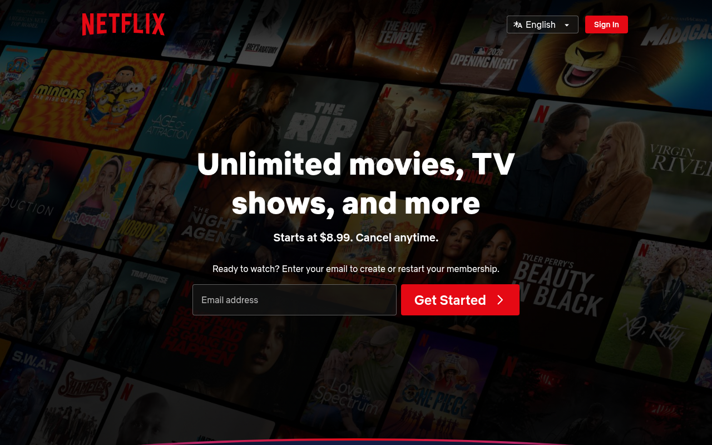

Netflix — Web Component Tokens (--wct--*)
https://netflix.com 이 실제로 서빙하는 CSS에서 직접 뽑은 디자인 토큰·타이포그래피·컴포넌트 스펙. 모든 값은 CSS 커스텀 프로퍼티를 파싱한 결과이고, AI 추론이나 추측은 섞이지 않았다.

body {
font-family: "Netflix Sans",
"Helvetica Neue", "Segoe UI",
Roboto, Ubuntu, sans-serif;
font-weight: 400;
}
:root {
--bg: #141414; /* 순흑 아님! */
--fg: #FFFFFF;
}
body {
background: var(--bg);
color: var(--fg);
}
:root {
--brand: #E50914;
/* canonical Netflix red
로고 · CTA 버튼 */
}
#000000(순흑)으로 두는 것.
Netflix의 실제 배경은 #141414(따뜻한 다크)다.
순흑을 쓰면 Netflix 특유의 깊이감 있는 다크 분위기가 사라지고 단순한 검정 배경처럼 보인다.
출처와 수집 기준
URL · fetch 시점 · 파싱 방식까지 모두 CSS 번들에서 직접 뽑은 값이다.
https://netflix.com--wct--* (Web Component Tokens)테크 스택
Next.js 기반 CSS-in-JS 구조. Web Component Tokens(--wct--) 시스템이 특징이다.
--wct--*--wct--focus-ring--color, --wct--focus-ring--widthdefault-ltr-iqcdef-cache-*#141414 (순흑이 아닌 따뜻한 다크)Netflix Sans + Netflix Sans Variable#E50914 — 로고, CTA 버튼 공통. frequency_candidates에서 7회 확인.타이포그래피
Netflix Sans Variable(가변 폰트)과 Netflix Sans를 구분한다. hero/display 타이틀에 weight 900을 사용하는 것이 Netflix 타이포의 가장 특징적인 점이다.
Netflix Sans Variable — 가변 폰트, Netflix 전용
Netflix Sans — Netflix 전용, 재배포 불가
monospace
100(초경량 메타) ~ 400(본문) ~ 700(heading) ~ 900(hero)
100은 초경량 메타 텍스트(저작권 등),
900은 히어로 타이틀 전용이다. 일반 heading은 700이다.
Netflix에서 700과 900을 구분하지 않고 쓰면 타이포가 무너진다.
Barlow나 Bebas Neue(heading용)가 근접하다.
컬러
다크 테마 우선이다. 배경은 #141414(순흑 아님)이고, 텍스트는 #FFFFFF다. 브랜드 레드 #E50914는 로고와 CTA 버튼에 공통 사용된다.
배경 #141414 · 텍스트 #FFFFFF · CTA #E50914
스페이싱
WCT focus token과 버튼 패딩이 핵심 spacing 토큰이다.
라디우스
Netflix는 작은 radius를 사용한다. 버튼과 카드 모두 4px이다.
소형 요소
버튼 · 콘텐츠 카드
대형 패널
컴포넌트
Netflix CTA 버튼. 다크 배경 위 #E50914 레드와 중성 반투명 버튼의 쌍이 특징이다.
<button class="btn-cta" type="button">지금 시청하기</button>
background: #E50914color: #FFFFFFfont-weight: 700border-radius: 4pxpadding: 1rem 2rem--wct--focus-ring--width: 0.125rem--wct--focus-ring--color: #A9A9A9다크 배경 전용 · focus ring 접근성 필수
CSS · Drop-in
루트 스타일시트에 바로 붙여넣으면 Netflix 디자인 토큰을 그대로 쓸 수 있다.
/* Netflix — copy into your root stylesheet */ :root { /* Fonts */ --font-family: "Netflix Sans", "Helvetica Neue", "Segoe UI", Roboto, Ubuntu, sans-serif; --font-weight-normal: 400; --font-weight-bold: 700; /* Brand */ --brand: #E50914; /* ← canonical Netflix red */ --brand-dark: #99161D; /* hover variant */ /* Surfaces (dark theme) */ --bg-page: #141414; /* 순흑 아님 */ --bg-card: #1A1A1A; --text: #FFFFFF; --text-muted: #ECECEC; --border: #A9A9A9; /* Key spacing */ --space-sm: 8px; --space-md: 16px; --space-lg: 1.5rem; /* Radius */ --radius-sm: 2px; --radius-md: 4px; /* 버튼 · 카드 */ /* Focus ring (WCT) */ --wct--focus-ring--width: 0.125rem; --wct--focus-ring--color-default: #A9A9A9; }
// tailwind.config.js module.exports = { theme: { extend: { colors: { brand: { DEFAULT: '#E50914', dark: '#99161D', }, surface: { page: '#141414', // 순흑 아님 card: '#1A1A1A', muted: '#ECECEC', }, }, borderRadius: { card: '4px', btn: '4px', }, fontFamily: { sans: ['Netflix Sans', 'Helvetica Neue', 'Segoe UI', 'Roboto', 'sans-serif'], }, fontWeight: { display: '900', }, }, }, };
Do / Don't
Netflix 디자인 시스템을 구현할 때 가장 자주 틀리는 항목들.
DO
- 배경은
#141414를 써라 — 순흑이 아닌 Netflix의 따뜻한 다크 베이스다. - 브랜드 레드는
#E50914를 써라 — Netflix canonical red다. - hero/display 텍스트에
font-weight: 900을 써라. - 버튼에
focus-ring: 0.125rem solid #A9A9A9을 유지하라 — 접근성 원칙이다. - 다크 배경에서 모든 텍스트는
#FFFFFF로 써라.
DON'T
- 배경을
#000000으로 두지 마라 — Netflix는#141414다. #FF0000(순빨강)을 쓰지 마라 — Netflix red는#E50914다.- 밝은 배경(라이트 테마)으로 구현하지 마라 — Netflix는 다크 테마 우선이다.
font-weight: 400을 heading에 두지 마라 — heading/display는 700~900이다.700과900을 혼용하지 마라 — 700은 일반 heading, 900은 hero 전용이다.